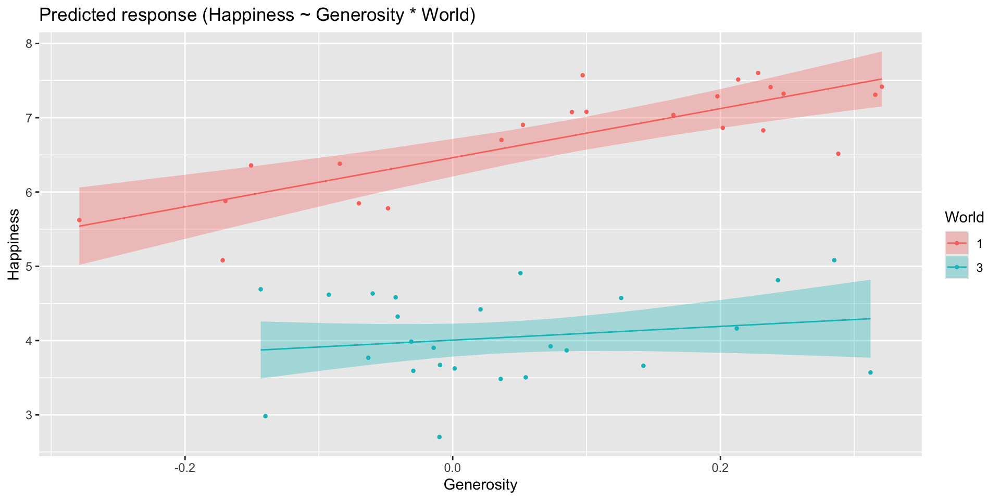
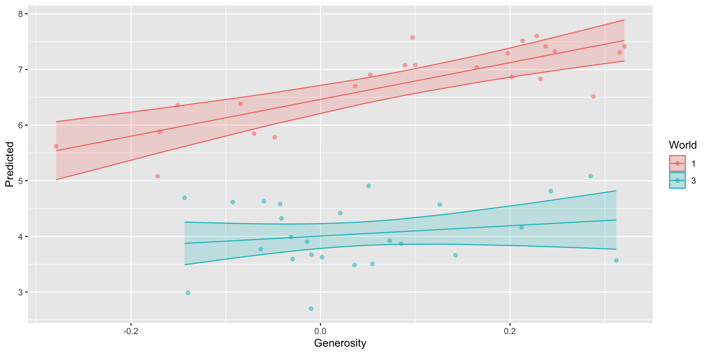
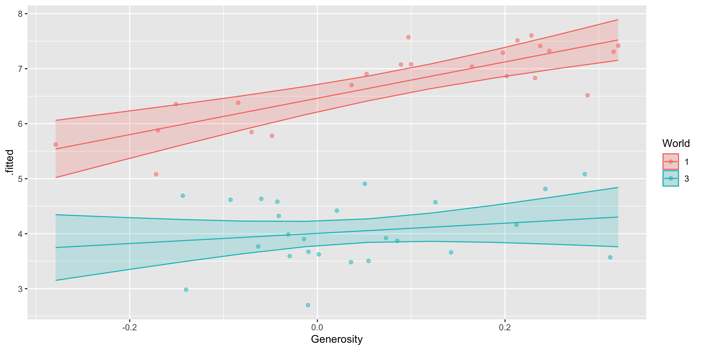
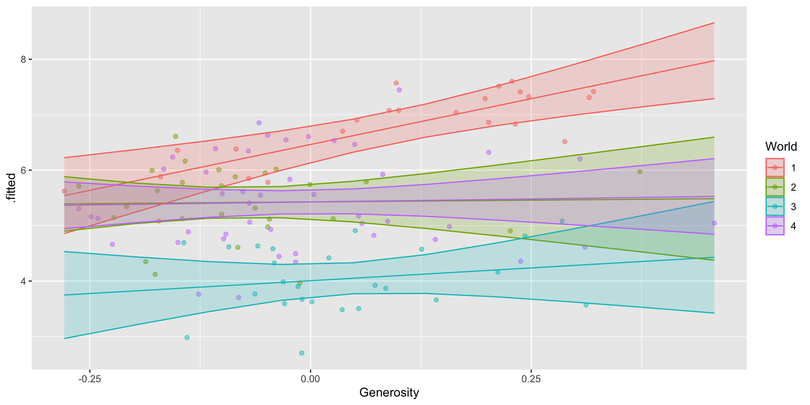
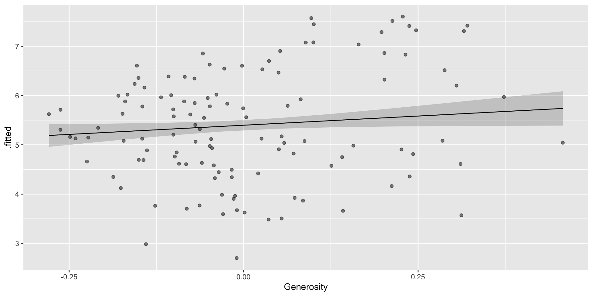
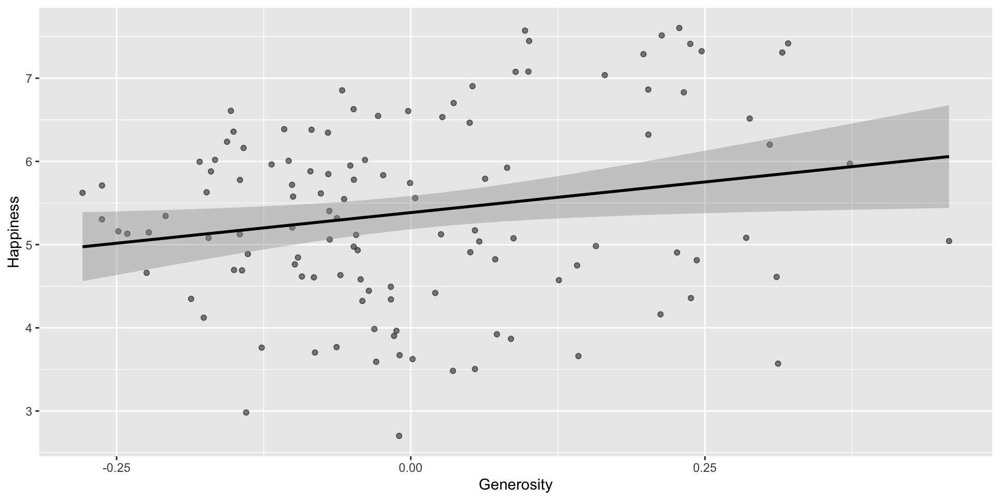
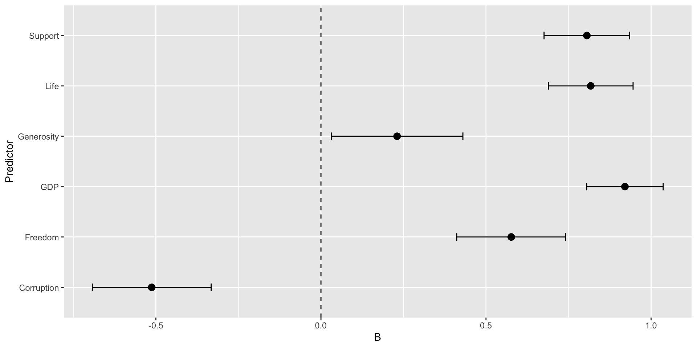
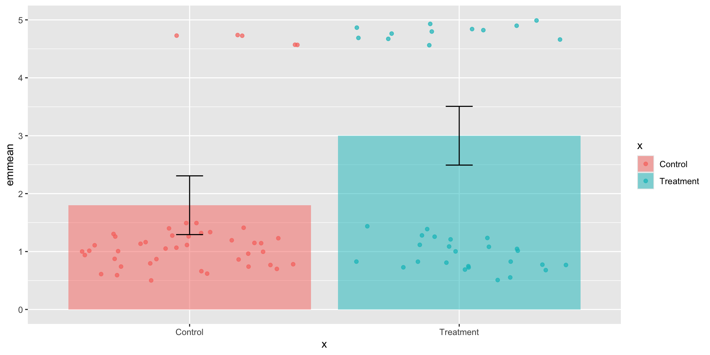
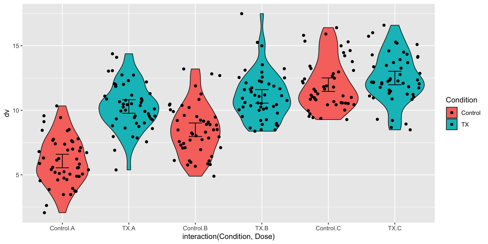
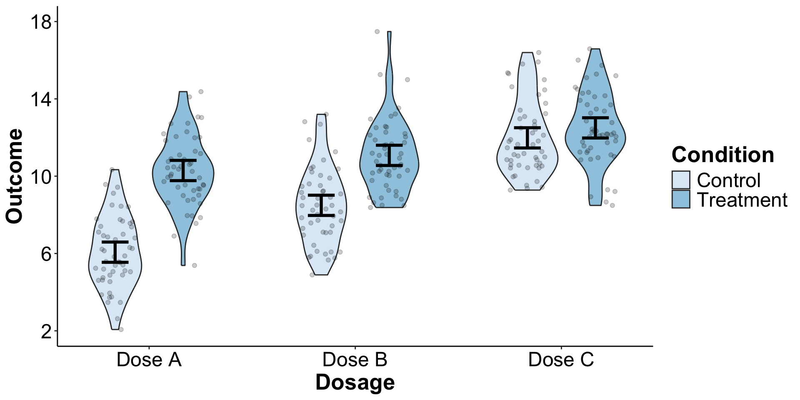

library(ggplot2)library(dplyr)library(tibble) # --- 1. Set Simulation Parameters ---set.seed(74) # Makes your simulation reproduciblen_per_group <-50# 50 participants per groupresidual_sd <-1.0# This is the within-group SD# Define the true means for our three groups.# We'll set them apart to ensure the ANOVA finds a significant effect.mean_group_A <-4.0mean_group_B <-5.0mean_group_C <-6.0# --- 2. Generate the Data ---# Create the data for each group from a normal distributiongroup_A_data <-rnorm(n_per_group, mean = mean_group_A, sd = residual_sd)group_B_data <-rnorm(n_per_group, mean = mean_group_B, sd = residual_sd)group_C_data <-rnorm(n_per_group, mean = mean_group_C, sd = residual_sd)# Combine into a single "long" data frame, which is required for ANOVAsimulated_data <-data.frame(dv =c(group_A_data, group_B_data, group_C_data),group =factor(rep(c("Group A", "Group B", "Group C"), each = n_per_group)))
Code
simulated_data
dv group
1 4.537724 Group A
2 3.144068 Group A
3 5.125589 Group A
4 2.024140 Group A
5 4.532226 Group A
6 4.898875 Group A
7 5.561317 Group A
8 2.355461 Group A
9 3.151854 Group A
10 2.452468 Group A
11 3.847093 Group A
12 4.616903 Group A
13 3.482458 Group A
14 3.620567 Group A
15 4.418366 Group A
16 3.295400 Group A
17 2.627650 Group A
18 4.294438 Group A
19 3.876405 Group A
20 4.756450 Group A
21 4.500845 Group A
22 4.969920 Group A
23 3.646166 Group A
24 4.707435 Group A
25 2.111729 Group A
26 4.695995 Group A
27 2.764185 Group A
28 4.805430 Group A
29 4.070132 Group A
30 3.595858 Group A
31 4.249095 Group A
32 5.802326 Group A
33 4.502903 Group A
34 2.639328 Group A
35 2.451961 Group A
36 3.326512 Group A
37 4.431850 Group A
38 4.664329 Group A
39 2.969846 Group A
40 4.389651 Group A
41 2.756397 Group A
42 4.694120 Group A
43 3.247227 Group A
44 2.807459 Group A
45 3.447210 Group A
46 3.078723 Group A
47 3.797052 Group A
48 3.715919 Group A
49 3.268710 Group A
50 4.401787 Group A
51 3.492348 Group B
52 3.602998 Group B
53 4.276491 Group B
54 4.836975 Group B
55 5.759684 Group B
56 5.857141 Group B
57 5.293927 Group B
58 6.807959 Group B
59 4.053286 Group B
60 4.318964 Group B
61 5.683130 Group B
62 4.947100 Group B
63 6.061933 Group B
64 4.650660 Group B
65 3.631385 Group B
66 5.134218 Group B
67 4.023368 Group B
68 3.984087 Group B
69 5.178696 Group B
70 5.620469 Group B
71 5.121022 Group B
72 5.892023 Group B
73 4.323403 Group B
74 4.961581 Group B
75 5.606014 Group B
76 4.771041 Group B
77 6.776684 Group B
78 4.930663 Group B
79 4.511946 Group B
80 5.088721 Group B
81 5.008981 Group B
82 3.077356 Group B
83 4.031263 Group B
84 4.658444 Group B
85 7.041627 Group B
86 5.293744 Group B
87 5.242325 Group B
88 5.343468 Group B
89 5.767449 Group B
90 4.356754 Group B
91 3.394279 Group B
92 5.031723 Group B
93 5.919665 Group B
94 5.879640 Group B
95 6.665500 Group B
96 4.213922 Group B
97 4.738492 Group B
98 4.021327 Group B
99 5.060806 Group B
100 3.496175 Group B
101 5.114629 Group C
102 5.959566 Group C
103 4.615152 Group C
104 6.507678 Group C
105 7.632644 Group C
106 7.963552 Group C
107 7.287843 Group C
108 4.598154 Group C
109 6.129571 Group C
110 3.753375 Group C
111 5.420896 Group C
112 5.463473 Group C
113 3.973545 Group C
114 7.528606 Group C
115 7.870942 Group C
116 6.336781 Group C
117 8.336787 Group C
118 5.806006 Group C
119 7.126016 Group C
120 5.010658 Group C
121 6.262966 Group C
122 5.136064 Group C
123 5.896559 Group C
124 6.170695 Group C
125 5.522765 Group C
126 6.521205 Group C
127 6.307725 Group C
128 6.178702 Group C
129 5.235294 Group C
130 3.796200 Group C
131 6.988865 Group C
132 7.478800 Group C
133 6.116675 Group C
134 6.051580 Group C
135 6.025808 Group C
136 6.343767 Group C
137 5.617322 Group C
138 6.860311 Group C
139 6.496034 Group C
140 5.688063 Group C
141 5.841789 Group C
142 4.600089 Group C
143 4.998930 Group C
144 5.310425 Group C
145 5.260099 Group C
146 5.000002 Group C
147 6.115574 Group C
148 5.162604 Group C
149 7.277799 Group C
150 5.805987 Group C
# A tibble: 3 × 3
group Mean SD
<fct> <dbl> <dbl>
1 Group A 3.82 0.929
2 Group B 4.95 0.935
3 Group C 5.97 1.06
Recap
But we have predictions from our model! We can get estimates from these to display the model of the world that we are actually drawing our conclusions from.
group emmean SE df lower.CL upper.CL
Group A 3.82 0.138 147 3.55 4.10
Group B 4.95 0.138 147 4.68 5.22
Group C 5.97 0.138 147 5.70 6.24
Confidence level used: 0.95
# Load necessary librarieslibrary(ggplot2)library(dplyr)library(tibble) # For a cleaner summary print# --- 1. Set Simulation Parameters ---set.seed(123) # Makes your simulation reproducible# Design: 3 (Dose) x 2 (Condition)n_per_cell <-50# 300 total participants / 6 cells = 50 per cell# Set the standard deviation for the "noise" or error.# A smaller SD makes the effects easier to detect (i.e., "significant").residual_sd <-2.0# --- 2. Define the "True" Population Means ---# We will set the 6 cell means to create a crossover interaction AND main effects.## Interaction: The effect of Condition will be different at each level of Dose.# - For Dose A, the mean goes UP (+4)# - For Dose B, the mean goes UP (+2)# - For Dose C, the mean is FLAT (0)# This non-parallelism creates the interaction.## We also set them so the marginal means are different.mean_A_Control <-6mean_A_TX <-10mean_B_Control <-9mean_B_TX <-11mean_C_Control <-12mean_C_TX <-12# --- 3. Generate the Data ---# Create the data for each of the 6 cellsdata_A_Control <-rnorm(n_per_cell, mean = mean_A_Control, sd = residual_sd)data_A_TX <-rnorm(n_per_cell, mean = mean_A_TX, sd = residual_sd)data_B_Control <-rnorm(n_per_cell, mean = mean_B_Control, sd = residual_sd)data_B_TX <-rnorm(n_per_cell, mean = mean_B_TX, sd = residual_sd)data_C_Control <-rnorm(n_per_cell, mean = mean_C_Control, sd = residual_sd)data_C_TX <-rnorm(n_per_cell, mean = mean_C_TX, sd = residual_sd)# Combine into a single "long" data framesimulated_data <-data.frame(dv =c(data_A_Control, data_A_TX, data_B_Control, data_B_TX, data_C_Control, data_C_TX),Dose =factor(rep(c("A", "A", "B", "B", "C", "C"), each = n_per_cell)),Condition =factor(rep(c("Control", "TX", "Control", "TX", "Control", "TX"), each = n_per_cell)))simulated_data
dv Dose Condition
1 4.879049 A Control
2 5.539645 A Control
3 9.117417 A Control
4 6.141017 A Control
5 6.258575 A Control
6 9.430130 A Control
7 6.921832 A Control
8 3.469878 A Control
9 4.626294 A Control
10 5.108676 A Control
11 8.448164 A Control
12 6.719628 A Control
13 6.801543 A Control
14 6.221365 A Control
15 4.888318 A Control
16 9.573826 A Control
17 6.995701 A Control
18 2.066766 A Control
19 7.402712 A Control
20 5.054417 A Control
21 3.864353 A Control
22 5.564050 A Control
23 3.947991 A Control
24 4.542218 A Control
25 4.749921 A Control
26 2.626613 A Control
27 7.675574 A Control
28 6.306746 A Control
29 3.723726 A Control
30 8.507630 A Control
31 6.852928 A Control
32 5.409857 A Control
33 7.790251 A Control
34 7.756267 A Control
35 7.643162 A Control
36 7.377281 A Control
37 7.107835 A Control
38 5.876177 A Control
39 5.388075 A Control
40 5.239058 A Control
41 4.610586 A Control
42 5.584165 A Control
43 3.469207 A Control
44 10.337912 A Control
45 8.415924 A Control
46 3.753783 A Control
47 5.194230 A Control
48 5.066689 A Control
49 7.559930 A Control
50 5.833262 A Control
51 10.506637 A TX
52 9.942906 A TX
53 9.914259 A TX
54 12.737205 A TX
55 9.548458 A TX
56 13.032941 A TX
57 6.902494 A TX
58 11.169227 A TX
59 10.247708 A TX
60 10.431883 A TX
61 10.759279 A TX
62 8.995353 A TX
63 9.333585 A TX
64 7.962849 A TX
65 7.856418 A TX
66 10.607057 A TX
67 10.896420 A TX
68 10.106008 A TX
69 11.844535 A TX
70 14.100169 A TX
71 9.017938 A TX
72 5.381662 A TX
73 12.011477 A TX
74 8.581598 A TX
75 8.623983 A TX
76 12.051143 A TX
77 9.430454 A TX
78 7.558565 A TX
79 10.362607 A TX
80 9.722217 A TX
81 10.011528 A TX
82 10.770561 A TX
83 9.258680 A TX
84 11.288753 A TX
85 9.559027 A TX
86 10.663564 A TX
87 12.193678 A TX
88 10.870363 A TX
89 9.348137 A TX
90 12.297615 A TX
91 11.987008 A TX
92 11.096794 A TX
93 10.477463 A TX
94 8.744188 A TX
95 12.721305 A TX
96 8.799481 A TX
97 14.374666 A TX
98 13.065221 A TX
99 9.528599 A TX
100 7.947158 A TX
101 7.579187 B Control
102 9.513767 B Control
103 8.506616 B Control
104 8.304915 B Control
105 7.096763 B Control
106 8.909945 B Control
107 7.430191 B Control
108 5.664116 B Control
109 8.239547 B Control
110 10.837993 B Control
111 7.849306 B Control
112 10.215929 B Control
113 5.764235 B Control
114 8.888876 B Control
115 10.038814 B Control
116 9.602307 B Control
117 9.211352 B Control
118 7.718588 B Control
119 7.300591 B Control
120 6.951742 B Control
121 9.235293 B Control
122 7.105051 B Control
123 8.018885 B Control
124 8.487816 B Control
125 12.687724 B Control
126 7.696100 B Control
127 9.470773 B Control
128 9.155922 B Control
129 7.076287 B Control
130 8.857384 B Control
131 11.889102 B Control
132 9.903008 B Control
133 9.082466 B Control
134 8.155006 B Control
135 4.893506 B Control
136 11.262674 B Control
137 6.078720 B Control
138 10.479895 B Control
139 12.818207 B Control
140 6.112214 B Control
141 10.403569 B Control
142 8.475605 B Control
143 5.855712 B Control
144 5.970665 B Control
145 5.796928 B Control
146 7.938187 B Control
147 6.076489 B Control
148 10.375834 B Control
149 13.200218 B Control
150 6.425939 B Control
151 12.575478 B TX
152 12.538084 B TX
153 11.664405 B TX
154 8.983247 B TX
155 10.761095 B TX
156 10.439209 B TX
157 12.125979 B TX
158 10.255122 B TX
159 12.953947 B TX
160 10.250838 B TX
161 13.105423 B TX
162 8.901646 B TX
163 8.479690 B TX
164 17.482080 B TX
165 10.166285 B TX
166 11.596455 B TX
167 12.273139 B TX
168 10.032439 B TX
169 12.033724 B TX
170 11.737929 B TX
171 10.569239 B TX
172 11.130586 B TX
173 10.931865 B TX
174 15.256904 B TX
175 9.517328 B TX
176 8.808007 B TX
177 11.075577 B TX
178 11.620961 B TX
179 11.873047 B TX
180 10.083269 B TX
181 8.873348 B TX
182 13.526370 B TX
183 10.300699 B TX
184 9.268974 B TX
185 10.527441 B TX
186 10.605648 B TX
187 13.219841 B TX
188 11.169475 B TX
189 12.508108 B TX
190 10.001416 B TX
191 11.428891 B TX
192 10.350628 B TX
193 11.189167 B TX
194 9.209273 B TX
195 8.378397 B TX
196 14.994427 B TX
197 12.201418 B TX
198 8.497457 B TX
199 9.777668 B TX
200 8.629040 B TX
201 16.397621 C Control
202 14.624826 C Control
203 11.469710 C Control
204 13.086388 C Control
205 11.171320 C Control
206 11.047506 C Control
207 10.422794 C Control
208 10.810765 C Control
209 15.301815 C Control
210 11.891944 C Control
211 12.238490 C Control
212 12.487375 C Control
213 14.464952 C Control
214 10.967872 C Control
215 10.014986 C Control
216 15.351394 C Control
217 11.117674 C Control
218 10.553868 C Control
219 9.527454 C Control
220 9.430569 C Control
221 10.852053 C Control
222 13.235972 C Control
223 14.219696 C Control
224 13.415177 C Control
225 11.272685 C Control
226 12.119500 C Control
227 10.590807 C Control
228 10.565564 C Control
229 13.769301 C Control
230 9.968815 C Control
231 15.910588 C Control
232 11.819361 C Control
233 12.429078 C Control
234 10.522945 C Control
235 10.851223 C Control
236 9.365968 C Control
237 11.634149 C Control
238 12.837965 C Control
239 12.648609 C Control
240 10.436927 C Control
241 10.422756 C Control
242 10.995603 C Control
243 14.992121 C Control
244 9.725393 C Control
245 11.641897 C Control
246 15.804724 C Control
247 11.798050 C Control
248 9.280319 C Control
249 10.670461 C Control
250 12.970920 C Control
251 11.248794 C TX
252 10.876247 C TX
253 11.312166 C TX
254 12.180993 C TX
255 15.197018 C TX
256 11.822870 C TX
257 14.161599 C TX
258 13.261508 C TX
259 11.772720 C TX
260 8.934196 C TX
261 10.957765 C TX
262 11.020259 C TX
263 12.094309 C TX
264 14.600397 C TX
265 16.586158 C TX
266 15.095162 C TX
267 11.733698 C TX
268 8.486945 C TX
269 11.222440 C TX
270 12.178414 C TX
271 13.690026 C TX
272 13.925056 C TX
273 13.368619 C TX
274 9.209451 C TX
275 13.699286 C TX
276 11.106886 C TX
277 12.349605 C TX
278 12.149102 C TX
279 12.856334 C TX
280 12.049350 C TX
281 8.665050 C TX
282 13.472992 C TX
283 12.772053 C TX
284 11.468697 C TX
285 12.236289 C TX
286 12.268077 C TX
287 12.442039 C TX
288 15.281692 C TX
289 11.561899 C TX
290 12.336131 C TX
291 14.336768 C TX
292 14.108362 C TX
293 14.290526 C TX
294 10.845064 C TX
295 16.004965 C TX
296 12.133402 C TX
297 15.733704 C TX
298 9.298195 C TX
299 12.041967 C TX
300 14.499829 C TX
Factorial ANOVA
Let’s fit our model!
Model says: There is a difference between tx vs. control AND that difference depends on the dosage.
# A tibble: 6 × 4
Dose Condition Mean SD
<fct> <fct> <dbl> <dbl>
1 A Control 6.07 1.85
2 A TX 10.3 1.81
3 B Control 8.49 1.98
4 B TX 11.1 1.86
5 C Control 12.0 1.89
6 C TX 12.5 1.89
Factorial ANOVA
Then, we have the output from our model, telling us what our model of the world says the outcome will look like for a given treatment group + dose combination.
We can apply this same approach to literally any type of model we want to run.
HW data: I think that there is a relationship between Generosity & Happiness, but it depends on first-world vs. third world status.
Code
# Load datareal_data <-read.csv("homework-world.csv")two_world <- real_data %>%filter(World ==1| World ==3) %>%mutate(World =as.factor(World)) ## To prevent R from thinking that World is a numeric variable# Fit a modelmoderation <-lm(data = two_world, Happiness ~ Generosity * World)summary(moderation)
Call:
lm(formula = Happiness ~ Generosity * World, data = two_world)
Residuals:
Min 1Q Median 3Q Max
-1.29523 -0.38274 0.01923 0.36275 0.85590
Coefficients:
Estimate Std. Error t value Pr(>|t|)
(Intercept) 6.4622 0.1234 52.372 < 2e-16 ***
Generosity 3.3059 0.6359 5.199 4.99e-06 ***
World3 -2.4562 0.1656 -14.834 < 2e-16 ***
Generosity:World3 -2.3819 1.0794 -2.207 0.0326 *
---
Signif. codes: 0 '***' 0.001 '**' 0.01 '*' 0.05 '.' 0.1 ' ' 1
Residual standard error: 0.5258 on 44 degrees of freedom
(3 observations deleted due to missingness)
Multiple R-squared: 0.8876, Adjusted R-squared: 0.88
F-statistic: 115.8 on 3 and 44 DF, p-value: < 2.2e-16
Plotting
Now we have a continuous DV. Therefore, it doesn’t make sense to work with cell means anymore.
library(emmeans)moderation.emm <-emmeans(moderation, ~ Generosity | World)moderation.emm # This tells us, what is the average level of Happiness when Generosity is at the grand mean?
World = 1:
Generosity emmean SE df lower.CL upper.CL
0.0628 6.67 0.111 44 6.45 6.89
World = 3:
Generosity emmean SE df lower.CL upper.CL
0.0628 4.06 0.107 44 3.85 4.28
Confidence level used: 0.95
Plotting
We need to get the predicted AKA fitted scores from our model.
Some functions from the easystats package will help with this!
library(easystats)# Get predictionsmoderation.p <-estimate_expectation(moderation)moderation.p
A nice thing about this easystats approach is you can easily make a plot. These are good to see what is going on in your data. But these are not super flexible, so it may not be easy to turn these into effective, publication-ready plots.
Code
# Get predictionsmoderation.p <-estimate_expectation(moderation, by =c("Generosity", "World"))# Plotplot(moderation.p)

Plotting
Using ggplot, we can take the predictions and plot them against the raw data.
Code
# Get predictionsmoderation.p <-estimate_expectation(moderation)moderation.p
# Convert modelbased object to a dataframemoderation.p <-data.frame(moderation.p)# Plotggplot(data = moderation.p, aes(x = Generosity, y = Predicted, group = World, color = World))+geom_line()+geom_point(data = two_world,aes(x = Generosity, y = Happiness, color = World), alpha =0.5)+geom_ribbon(aes(ymin = CI_low, ymax = CI_high, fill = World), alpha =0.2)

Plotting
The default is to plot predictions for the actual data points that you observed.
In some cases (especially for plotting purposes), you might want to know – what would my model predict for scores that are outside the range in the observed data?
Plotting
To get more flexibility with what predictions we can make and plot, we can combine data_grid() from the modelr package with augment() from the broom package
Code
library(modelr)library(broom)# Get predictionsmoderation.p <-data_grid(two_world, Generosity =seq_range(Generosity, 10), World) %>%augment(moderation, newdata = ., # feeds the datagrid object to the new data argumentinterval ="confidence") # default CI = 95%# Plot predictions against raw dataggplot(data = moderation.p, # predictionsaes(x = Generosity, y = .fitted, group = World, color = World))+geom_line()+geom_point(data = two_world, # raw dataaes(x = Generosity, y = Happiness, color = World), alpha =0.5)+geom_ribbon(aes(ymin = .lower, ymax = .upper, fill = World), alpha =0.2)

Plotting
Code
library(modelr)library(broom)# Get predictionsmoderation.p <-data_grid(two_world, Generosity =seq_range(Generosity, 10), World) %>%augment(moderation, newdata = ., # feeds the datagrid object to the new data argumentinterval ="confidence") # default CI = 95%# Plot predictions against raw dataggplot(data = moderation.p, # predictionsaes(x = Generosity, y = .fitted, group = World, color = World))+geom_line()+geom_point(data = two_world, # raw dataaes(x = Generosity, y = Happiness, color = World), alpha =0.5)+geom_ribbon(aes(ymin = .lower, ymax = .upper, fill = World), alpha =0.2)
Looking ahead
We are going to learn about increasingly complex models next semester.
This approach (give data to model -> model creates predictions -> plot predictions) will work for all of them.
Looking ahead
E.g., I want to know how Happiness and Generosity are related separately for each World category.
Code
# Load datafour_world <- real_data %>%mutate(World =as.factor(World)) ## To prevent R from thinking that World is a numeric variable# Fit a modelmoderation <-lm(data = four_world, Happiness ~ Generosity * World)summary(moderation)
Call:
lm(formula = Happiness ~ Generosity * World, data = four_world)
Residuals:
Min 1Q Median 3Q Max
-1.70552 -0.47722 -0.01398 0.46844 1.99969
Coefficients:
Estimate Std. Error t value Pr(>|t|)
(Intercept) 6.4622 0.1648 39.204 < 2e-16 ***
Generosity 3.3059 0.8495 3.892 0.00017 ***
World2 -1.0354 0.2267 -4.568 1.27e-05 ***
World3 -2.4562 0.2212 -11.104 < 2e-16 ***
World4 -1.0358 0.1955 -5.299 5.91e-07 ***
Generosity:World2 -3.1792 1.3272 -2.395 0.01826 *
Generosity:World3 -2.3819 1.4419 -1.652 0.10135
Generosity:World4 -3.0887 1.0985 -2.812 0.00582 **
---
Signif. codes: 0 '***' 0.001 '**' 0.01 '*' 0.05 '.' 0.1 ' ' 1
Residual standard error: 0.7024 on 112 degrees of freedom
(16 observations deleted due to missingness)
Multiple R-squared: 0.6354, Adjusted R-squared: 0.6127
F-statistic: 27.89 on 7 and 112 DF, p-value: < 2.2e-16
Looking ahead
Code
# Get predictionsmoderation.p <-data_grid(four_world, Generosity =seq_range(Generosity, 10), World) %>%augment(moderation, newdata = ., # feeds the datagrid object to the new data argumentinterval ="confidence") # default CI = 95%# Plot predictions against raw dataggplot(data = moderation.p, # predictionsaes(x = Generosity, y = .fitted, group = World, color = World))+geom_line()+geom_point(data = four_world, # raw dataaes(x = Generosity, y = Happiness, color = World), alpha =0.5)+geom_ribbon(aes(ymin = .lower, ymax = .upper, fill = World), alpha =0.2)

Looking ahead
As we run increasingly complex models, graphical depictions will also get more complex and difficult to parse. More on this later.
Looking ahead
E.g., I want to know the relationship between X & Y, controlling for what I believe to be confounding variables W, Z, Q, ….
# Fit a modelmod3 <-lm(data = four_world, Happiness ~ Generosity + GDP + Support + Freedom)summary(mod3)
Call:
lm(formula = Happiness ~ Generosity + GDP + Support + Freedom,
data = four_world)
Residuals:
Min 1Q Median 3Q Max
-1.99181 -0.29063 0.03551 0.40026 1.28055
Coefficients:
Estimate Std. Error t value Pr(>|t|)
(Intercept) -2.8590 0.4510 -6.339 5.00e-09 ***
Generosity 0.7450 0.3702 2.013 0.046552 *
GDP 0.5945 0.0648 9.174 2.66e-15 ***
Support 1.9833 0.6152 3.224 0.001657 **
Freedom 1.5754 0.4626 3.405 0.000918 ***
---
Signif. codes: 0 '***' 0.001 '**' 0.01 '*' 0.05 '.' 0.1 ' ' 1
Residual standard error: 0.5546 on 112 degrees of freedom
(19 observations deleted due to missingness)
Multiple R-squared: 0.7719, Adjusted R-squared: 0.7637
F-statistic: 94.74 on 4 and 112 DF, p-value: < 2.2e-16
Looking ahead
Code
# Get predictionsmod3.p <-data_grid(four_world,GDP =mean(four_world$GDP, na.rm = T), Support =mean(four_world$Support, na.rm = T), Freedom =mean(four_world$Freedom, na.rm = T),Generosity =seq_range(Generosity, 10),) %>%augment(mod3, newdata = ., # feeds the datagrid object to the new data argumentinterval ="confidence") # default CI = 95%# Plot predictions against raw dataggplot(data = mod3.p, # predictionsaes(x = Generosity, y = .fitted))+geom_line()+geom_point(data = four_world, # raw dataaes(x = Generosity, y = Happiness), alpha =0.5)+geom_ribbon(aes(ymin = .lower, ymax = .upper), alpha =0.2)

Looking ahead
Again, it would not be out of the ordinary to see a paper that says “we controlled for Z, W, Q”, and then this is their plot. But this is not the effect they are telling you about.
Code
# Get predictionsggplot(data = four_world, aes(x = Generosity, y = Happiness))+geom_point(alpha =0.5)+geom_smooth(method ="lm", color ="black")

Tables
Tables
Often, we want to run lots of models and summarize a large number of results in a table.
Many of us begin life manually copy+pasting or typing numbers from summary outputs into a word document :’(
With R, there are better ways.
Tables
Our model summary is just a big list of numbers and dataframes. We can manipulate these to get any given piece of info that we want from our model.
mod4 <-lm(Happiness ~ Generosity, data = four_world)results <-summary(mod4)results$coefficients
Estimate Std. Error t value Pr(>|t|)
(Intercept) 5.384976 0.1012968 53.160398 2.800758e-84
Generosity 1.472521 0.6493563 2.267662 2.516943e-02
Unfancy way to make a table: Run models, save info from models to a dataframe, formatted the way you want your table to be.
Code
library(stats)# Formatting function to get bs to fit formatting conventions.formatbs <-function(x) { gsub("-","\u2013",sprintf("%.2f", x))}# Create a list of predictors that we will runPredictors <-c("GDP", "Support", "Life", "Freedom", "Generosity", "Corruption")# Create an empty table, which we will use to build our tabletable1 <-data.frame()# This for loop runs a model with each of our predictors, pulls key information, and adds it to the dataframefor(i in Predictors){ equation <-paste0("Happiness ~ ", i) # write equation to feed to lm() model <-lm(paste0(equation), data = four_world) results <-summary(model) beta <-formatbs(results$coefficients[paste0(i), "Estimate"]) # pull b1 coefficient and format CI <-paste0( # Here we are concatenating multiple pieces of information to get formatted CIs"[",formatbs(results$coefficients[paste0(i), "Estimate"] -1.96*results$coefficients[paste0(i), "Std. Error"]),", ",formatbs( results$coefficients[paste0(i), "Estimate"] +1.96*results$coefficients[paste0(i), "Std. Error"]),"]" )# Add results to the table table1 <-rbind(table1, data.frame("b"= beta,"ci"= CI))}# Add predictor names as first column of the tabletable1 <-cbind(data.frame(Predictor = Predictors), table1)table1
Predictor b ci
1 GDP 0.80 [0.70, 0.90]
2 Support 6.56 [5.50, 7.62]
3 Life 0.11 [0.09, 0.13]
4 Freedom 4.31 [3.07, 5.54]
5 Generosity 1.47 [0.20, 2.75]
6 Corruption –2.57 [–3.47, –1.67]
Tables
There are dozens of fancy ways in r to make tables that are clean and publication ready.
YMMV. These can save you a ton of coding time trying to get a pretty table. Or you might want something super specific that is easiest to get by just coding it yourself the hard way.
Tables
The gtsummary package a great and super easy one for regression tables.
Advantage of tables: Can summarize all the relevant information in one place.
Disadvantage of tables: requires reading :(
possibly even thinking :(((((((
Visually summarizing Many Results
Using similar approaches, we can turn our tables into plots.
Code
library(tidyverse)# Create a dataframe with b + se for each predictoreffects <-data.frame()for(i in Predictors){ standard <-paste0("scale(", i, ")") equation <-paste0("Happiness ~ ", standard) model <-lm(paste0(equation), data = four_world) results <-summary(model) beta <- results$coefficients[paste0(standard), "Estimate"] se <- results$coefficients[paste0(standard), "Std. Error"] effects <-rbind(effects, data.frame("B"= beta,"se"= se))}effects <-cbind(data.frame(Predictor = Predictors), effects)# Display all the results on one plotggplot(data = effects, aes(y = Predictor, x = B))+geom_point(size =3)+geom_errorbar(aes(xmin = B -1.96*se, xmax = B +1.96*se),width = .15)+geom_vline(xintercept =0, linetype ="dashed")

Good data viz
What is a good data visualization?
There are lots and lots of opinions out there.
Some of this is personal taste and judgment.
I will try to share some tips that will generally lead to better visualizations, and note some ways to work with ggplot to get results.
What is data visualization
Both art + science.
Art = aesthetically pleasing. Coherent, meaningful, easy to look at.
Science = accurately representing certain types of data.
Both = Communicating the story of your data to your audience.
Telling your story
Raw data are not intuitive to understand.
We fit a model to understand the relationships in our data. Then, we use our model to visualize the relationships that are in our data.
Telling the honest story of the relationships we believe to be important in our data.
ggplot(data = means, aes(x = x, y = emmean, fill = x))+geom_point(data = data, aes(x = x, y = y, color = x),position =position_jitter(height =0.5), alpha =0.7)+geom_bar(stat ="summary", alpha =0.5)+geom_errorbar(aes(ymin = emmean -1.96*SE, ymax = emmean +1.96*SE), width =0.1)+scale_y_continuous(limits =c(0, 5))

Basics of a good figure
Axes are clearly labeled. Units of measurement are often helpful.
Scale is 1) consistent across the axis, 2) interpretable, chosen so that 3) data are evenly distributed, and 4) the full range of relevant values is represented.
Data points are represented clearly, with meaningful and obvious keys for categorical distinctions.
Graph is the appropriate type for your data.
What graphs are appropriate for my data?
E.g., barplots are not really ideal for continuous data (see earlier example). Violin plots and dot plots do better.
Similarly, it is inappropriate to graph a linear relationship between categorical variables (though ggplot will let you do it!)
What graphs are appropriate for my data?
Accessibility is important
Colorblindness is a thing.
People have poor vision, and it can hard to know how big text will be when printed on a page or displayed on a screen.
So, we need to be thoughtful about colors, contrast, sizes, and fonts.
Colors
There are all kinds of color palettes you can try out.
Some helpful options come with r, including the color_brewer and color_veridis families.
Different kinds of color palettes are more appropriate for different kinds of data.
Colors
Viridis, intended to be easily perceptible for people with common forms of color blindness.
Another good approach is to use the same or similar colors, but vary the shade/tone/tint. This means your plot will work for different types of vision and will work if printed in black and white.
Bold the things that you want viewers eyes drawn to first (e.g., axis titles)
An example
We can walkthrough a first pass visualization, and an update that would be passable for a manuscript or presentation. Look at how to implement some improvements in ggplot.
# This has the basic elements we need for our plot. Let's try to make it tell our story more effectively

Better version
Code
# Manually create an interaction/cell means variable. This lets us customize the spacing between each cell.dat.em2$iv <-c(1, 1.33, 2, 2.33, 3, 3.33)simulated_data %>%# Same thing as above in the raw datamutate(iv =case_when(Dose =="A"& Condition =="Control"~1, Dose =="A"& Condition =="TX"~1.33, Dose =="B"& Condition =="Control"~2, Dose =="B"& Condition =="TX"~2.33, Dose =="C"& Condition =="Control"~3, Dose =="C"& Condition =="TX"~3.33) ) %>%ggplot(aes(x = iv, y = dv))+geom_violin(aes(x = iv, group = iv, fill = Condition))+geom_point(aes(x = iv), position =position_jitter(width =0.1), # try to keep points from overlappingalpha =0.2)+# alpha = darkness. They are still visible, but lighter = cleaner plotgeom_errorbar(data = dat.em2, aes(x = iv, y = emmean, ymin = lower.CL, ymax = upper.CL),width =0.13, # Controls the T-ness. I like the look of flatter CIs.linewidth =1.3)+# We want to draw attention to our predictions, so let's make them bigger.theme_classic()+# Everyone has a favorite theme! This one has the classic psych article look.scale_x_continuous(breaks =c(1.165, 2.165, 3.165), # Adds ticks at each marginelabels =c("Dose A", # We used a continuous scale to control spacing"Dose B", # But now we can add back discrete labels"Dose C"))+scale_y_continuous(limits =c(2, 18),breaks =seq(2, 18, by =4))+# Setting some reasonable ticks on the DVscale_fill_brewer( # An easy option to implement contrastlabels =c("Control", "Treatment"))+# Plus add descriptive legend keyslabs(x ="Dosage",y ="Outcome")+# Finally, customize all text in the theme argumenttheme(axis.title.y =element_text(size =20, color ='black', face ='bold'),axis.title.x =element_text(size =20, color ='black', face ='bold'),axis.text.x =element_text(size =18, color ='black'),axis.text.y =element_text(size =18, color ='black'),legend.title =element_text(size =20, color ='black', face ='bold'),legend.text =element_text(size =18, color ='black'))

How do I know if my figure is good?
Does it EASILY communicate what you want? Will your message be clear to a reader who is bored, tired, and/or lazy (i.e., a reviewer)?
Is it accessible to people with poor eyesight and colorblindness?
Does it faithfully reflect the data? Good figures = beautiful and true <3